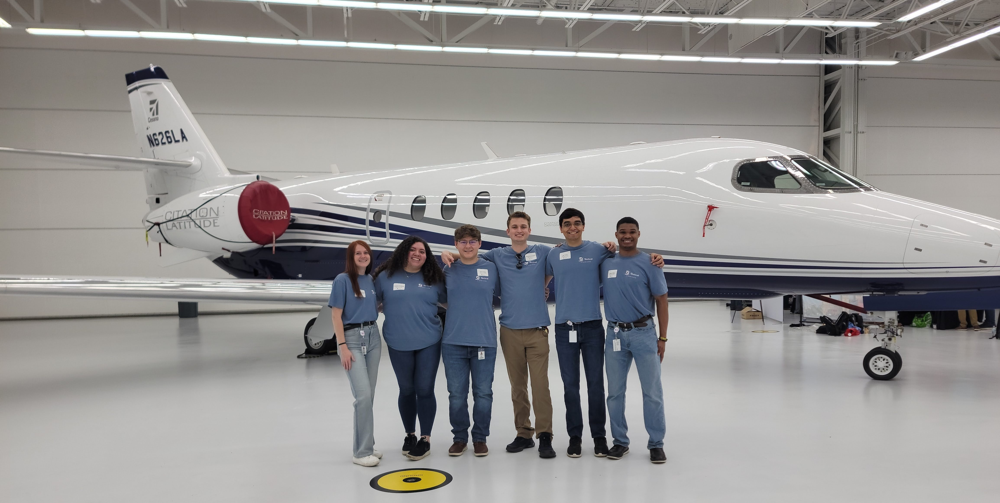

Background

My passion for engineering and design started at a young age. I always loved constructing cities, buildings, and planes with blocks and LEGO. I was fortunate to follow my passion as early as middle school through engineering classes and clubs. In high school, I gained experience with professional software like Autodesk Inventor and led our Aerospace Club where we pursued projects like constructing an antenna to talk to the ISS and launching high-altitude balloons.
Education

Going into college, I decided I wanted a broader, more individualized education than what many traditional engineering schools were offering. That led me to enter a dual-degree Engineering Program, where I first earned a physics degree at Grinnell College before completing a mechanical engineering degree at Columbia University. I really enjoyed my time at Columbia, where I was able to work hands-on with many projects and learn the fundamental engineering tools and concepts needed to succeed in this career path. To further deepen my knowledge, I am pursuing an accelerated master's degree that I will complete in May 2025.
I couldn't be happier with the path I chose. My time at Grinnell helped shape me into a more well-rounded individual, strengthening my writing and communication skills especially. Meanwhile, my time at Columbia provided the tools and confirmation of my passion for engineering through both classes and extracurricular projects.
Research Experience

Over the summers between my college semesters, I worked on several cutting-edge projects in university research labs. These experiences were exciting and intimidating, teaching me how balance independent research with seeking help when necessary. Despite not having taken prior engineering classes, I was able to quickly grasp concepts and programs like MATLAB and SOLIDWORKS. These experiences affirmed my decision to pursue an engineering degree following my time at Grinnell.
Professional Experience

My research and coursework at Columbia prepared me for successful internships at Textron Aviation. My first summer, I interned in Customer Support Engineering where I focused on creating aircraft technical troubleshooting systems in HTML (which helped me make this site!). This project exposed me to the intricacies of engineering and design that allow machinery like airplanes to function effectively. Witnessing how these decisions impact customer support broadened my perspective on the importance of accounting for all variables in the design process.
The following summer, I built on this experience as an intern in Advanced Design Engineering. My acquired aircraft knowledge and engineering skills were critical to my success in this professional design environment. My project involved contributing to a professional CAD, which allowed me to practice my design skills and apply principles from my coursework and extracurricular experiences at Columbia. Seeing all of my prior experience come together in a successful summer has given me confidence in my ability to excel in a future career in design.